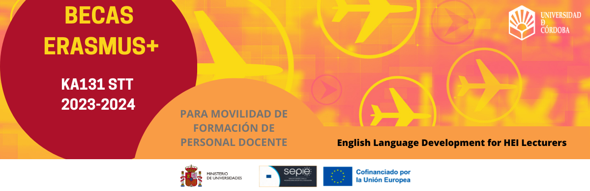

ES
EN
Buscar
Menú
Know UCO
History
Institutional organization
Government Team
Government Council
Claustro
Secretaría General
Management
Asesoría Jurídica
Defensoría Universitaria
Social Council
Gestión administrativa
Regulations
Centers, Campuses, and Departments
Faculty of Veterinary Medicine
Escuela Técnica Superior de Ingeniería Agronómica y de Montes
Facultad de Medicina y Enfermería
Faculty of Sciences
Facultad de Filosofía y Letras
Facultad de Derecho y Ciencias Económicas y Empresariales
Facultad de Educación
Escuela Politécnica Superior de Córdoba
Faculty of Labor Sciences
Escuela Politécnica Superior de Belmez
Institute of Postgraduate Studies
Center of Teaching 'Sagrado Corazón' (Affiliated Center)
University Center Fisidec (Affiliated Center)
Intergenerational Center 'Professor Francisco Santisteban'
Departments
Rabanales Campus
Biodiversity in Rabanales
Facts and figures
How to get
Information for Students
Student Information Portal (PIE)
Degrees
Master's and Doctorate
Own Titles
Continuous Training, Employability, and Entrepreneurship
Internships and Employment
Academic Management Services
Chairs, classrooms, and foundations
UCOdigital
Andalusian Virtual Campus
Pre-registration
International Students
eTesis
Teaching
Inspection Unit
Training and Teaching Innovation
Language Policy
Quality
Moodle
SIGMA Campus Docente
E-guided
UCOMUNIDAD
Classroom Booking System
Investigation
Research Portal
International Projects
Central Research Support Service
Experimental Animal Service
Unit of Scientific Culture and Innovation
Research Groups
HRS4R
Transfer
Transfer Portal
Galileo's Own Transfer Plan
Technological Offer
Summary document of UCO's technological offer
Collaboration with Companies
University-Enterprise Contracts
Collaborative Projects
University-Enterprise Chairs
Who's who in transfer tasks?
Interviews with UCO Research Groups
Videos of Researchers related to the Biotechnology Area
Services and University Life
UCO Online Store
Accommodation
Electronic Registry and Administration Archive
Area of Cooperation and Solidarity
Financial Management
Inclusion Area
Library
Quality
Contracting and Heritage
UCOCulture
Sports
Communication Office
UCOidiomas
Equality
Offers for the University Community
Other Websites and Blogs
Internships and Employment
Health Promotion
Protocol
Publications
Virtual Secretariat
Internal Control Service
IT Service
Prevention and Protection Service
Risk Prevention and Radiological Protection
Environmental Protection
UCOdigital
UCOMPRAS
Technology Support Unit for Centers, Departments, and Services
Psychological Care Unit
General Services Unit
Technical Unit
International
Mobility Programs
International Projects
Contact and information for foreigners
International Students
International Agreements

University News
Agenda
Videos
Science at UCO
News
Sara Muñoz Porras, re-elected president of the UCO Student Council (CEUCO)
The University of Córdoba, among the 800 best universities in the world according to the latest THE ranking
The Andalusian rectors address the new degree map and ask for equality with respect to private universities
#LaUCOenAbierto I Light of mined lives
OF INTEREST
electronic headquarters
transparency and social responsibility
BOUCO
electronic invoice
staff portal
ceiA3